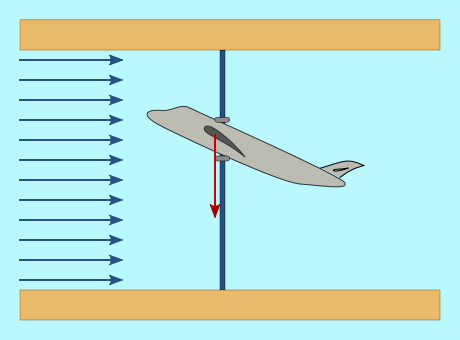

There is an effect known as "stalling" that causes a decrease in lift, which makes the blades rotate (see Why do the blades rotate?). This effect occurs when an airplane increases the angle of attack of its wings above a certain value, as shown in the following graph.
|
In this case, the angle of the wings causes an upward force to act on them. The red vector indicates the difference between this upward force and the weight of the aircraft.
|
 When the angle is too large, the upward force is less than the weight of the aircraft, due to the wing entering a stall. |
|
|
When the angle is small, the laminar flow around the wing or blade is not disrupted. |
|
|
When the angle exceeds a certain value, the laminar flow disappears from the end areas of the blade, and turbulence appears, reducing the surface area that contributes to lift and, therefore, the force that "pulls" the blade upward (lifting), compared to the previous case. |
|
|
It is also possible to induce turbulence by changing the direction of the angle of attack. This technique is used in the control solution called "Active Stall." The advantage here is that a much smaller angle is required than in the previous case to enter into stall. |
Fig 1
The following figure shows the curves corresponding to the evolution of the vertical thrust force (lifting) and in the direction of the wind (dragging) as a function of pitch. See Why do the blades rotate? for the relationship between these forces and those that determine the rotational forces of the blades and the thrust on the tower.
It can be seen that when entering stall, the behavior changes, so that an increase in wind corresponds to a decrease in the lifting force and therefore in the power obtained from the wind to rotate the hub. It can also be seen in the red curve that when entering stall, the force acting on the tower increases. In other words, entering stall implies additional loads on the tower.
Fig. 2.
The following figure shows the power curve obtained from the wind for fixed-pitch wind turbines, where you can see the effect of entering stall on power. In these cases, the blade is designed so that the wind level at which stalling occurs is slightly higher than the nominal wind speed. This passive response helps the controllability of the wind turbine: that is, it helps prevent it from spinning out of control when the wind increases significantly.

Fig. 3.
The following figure shows the result of using stall with the "Active Stall" control technique, in which pitch is used to "force" stall with wind speeds lower than those of the blade itself. Two areas can be seen in this figure:
a) in the wind zone below the nominal wind speed (around 12 m/s in the graph), the pitch is maintained at 0º, which corresponds to a maximum Cp (see Aerodynamic Coefficient);
b) above the nominal wind speed, when we need to reduce the power obtained from the wind, the blade is set at a small angle against the wind (negative Pitch sign). The absolute value of this angle decreases as the wind increases, reflecting the same stall phenomenon seen in fixed-angle blades.
Fig. 4.
Applying this pitch control, the characteristic Power vs. Wind curve in a wind turbine controlled by Active Stall is shown in the following figure.

Fig. 5.
As can be seen by comparing Figures 3 and 5, production with winds above the Nominal Wind improves significantly in the case of wind turbines with variable pitch angle and the "Active Stall" method.